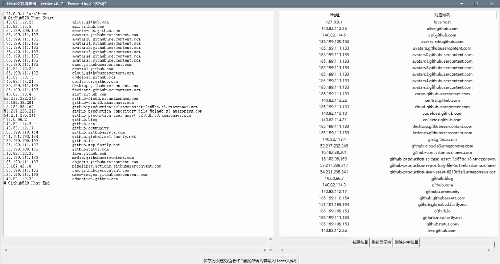

用Python制作一个Hosts文件编辑器
本文制作人员:Al2(SO4)3-硫酸铝
最早更新日期:2024.7.9
最后更新日期:2024.7.9
Hosts文件是一个用于储存计算机网络中各节点信息的计算机文件,这个文件负责将主机名映射到相应的IP地址,通常用于补充或取代网络中DNS的功能.很多情况下我们需要修改这个文件的一些内容,
但是这个文件打开后并不能够直观地查看一些条目,因此我做了一个Hosts文件编辑器,可以直观地的查看Hosts文件的内容并对其进行修改.
查看脚本代码
下载这个脚本
使用说明:该程序会自动检测您的操作系统类型并打开您操作系统中的Hosts文件,您可以在左边直接编辑Hosts文件,也可以在右边使用工具删除对应条目或新建条目,点击保存即可完成修改.
其它说明:本编辑器不一定适合所有场景,您可以在下载之后自行根据您的个人情况更改其代码.作者不对任何人负任何责任!
程序截图如下:
